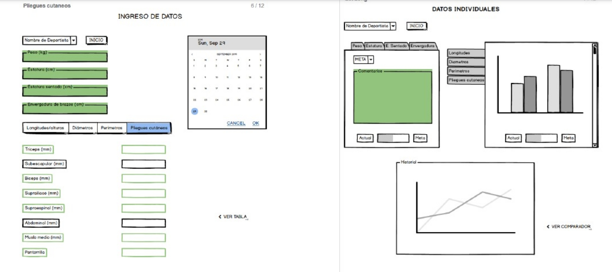

(1)Si bien la información recopilada es relevante para tener entendimiento del problema presentado, esta debe ser resumida y presentada en un forma didáctica, haciendo uso de gráficos, tablas y diagramas para distribuir y dosificar la información.
(2)De manera similar, cada ítem del estado del arte debe ser presentada de manera más atractiva, usando imágenes de menor tamaño y de manera horizontal, tal que no sea necesario descender la página web para visualizar el contenido.
(3)Se debe mejorar la distribución de las imágenes
(4)Cambiar la monotonía de la tabla
(5)Se debería, mejorar la presentación de de los conceptos de solución de manera que sean más entendibles
(6)Si bien la tabla de restricciones describe en análisis de manera correcta, habría que mejorar la presentación de esta.
(7)También es necesario mejorar la presentación de este punto
(8)Se debe cambiar los colores de la tabla de manera que se vean más cohesivo con el resto de la página.
Este sistema permitirá ingresar los datos antropométricos previamente tomados por el especialista y, en base a ello, crea un registro con la información antropométrica de cada deportista y un historial para el mismo, en el cual se podrá visualizar la situación actual y la proyección a futuro. Asimismo, organiza la información según parámetros como deporte, sexo y peso.
Figura 2. Interfaz y funcionamiento del aplicativo móvil generador de un registro de bases de datos: Ingreso de datos y datos individuales
Además, permite la comparación con deportistas de talla internacional, según variables de interés del deporte correspondiente.
Figura 3. Interfaz y funcionamiento del aplicativo móvil generador de un registro de bases de datos: Comparación con deportistas.